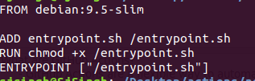

- What are GitHub Actions?
- GitHub Actions are a flexible way to automate nearly every aspect of your team's software workflow.
- There are two components to using GitHub Actions :- - the action itself
- - a workflow that uses action(s)
- What is Workflow?
A workflow can contain many actions. Each action has its own purpose. We'll put the files relating to the action in their own directories.
- Actions are of 2 types :
s
- Docker container actions allow the environment to be packaged with the GitHub Actions code and can only execute in the GitHub-Hosted Linux environment.
- JavaScript actions decouple the GitHub Actions code from the environment allowing faster execution but accepting greater dependency management responsibility.
- Initially add a Docker file

- The entrypoint.sh script will be run in Docker, and it will define what the action is really going to be doing.
- add entrypoint.sh as

- Next, we'll define a workflow that uses the GitHub Action.
- Next, we'll define the action.yml file which contains the metadata for our action.
- this action.yml contains icon , im=nput and running images

- After this we have to define a workflow to initiate our action in .github/workfows/main.yml and add the following lines


- Workflows piece together jobs, and jobs piece together steps.- We'll now create a job that runs an action.
- Actions can be used from within the same repository, from any other public repository, or from a published Docker container image. We'll use an action that we'll define in this repository.
- Now we edit the main.yml file and add a job to it


- Congratulations, Its done.